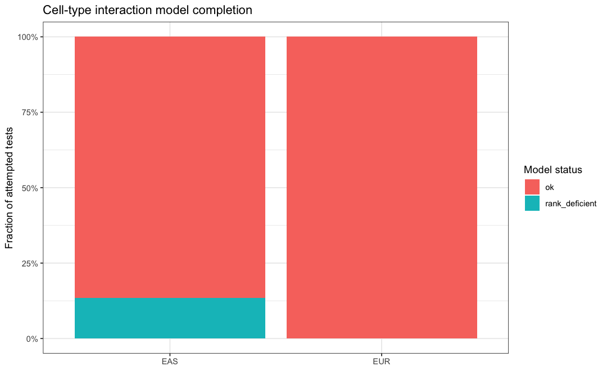
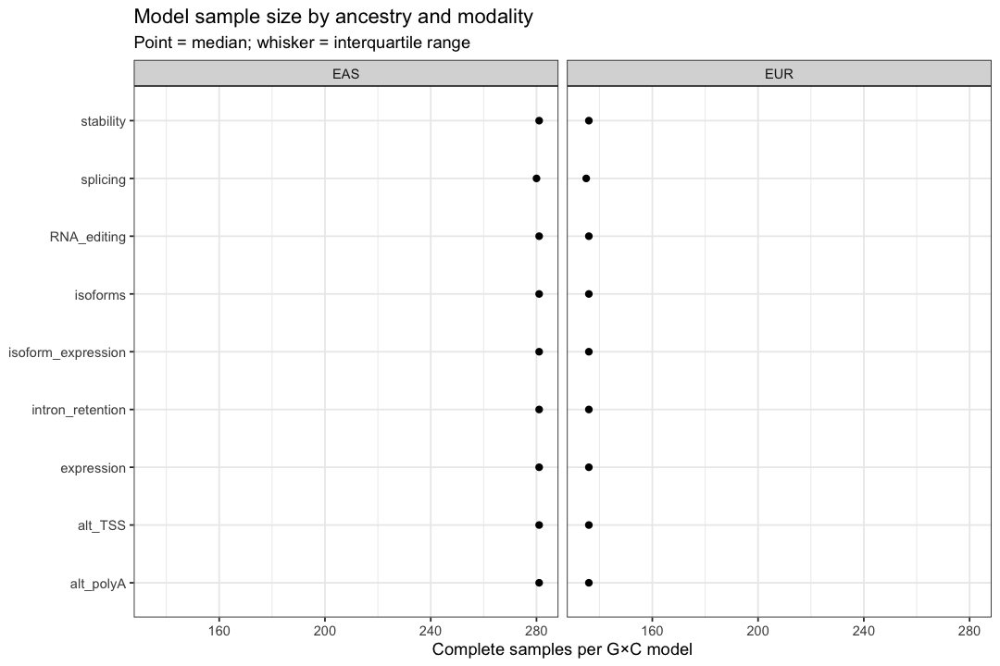
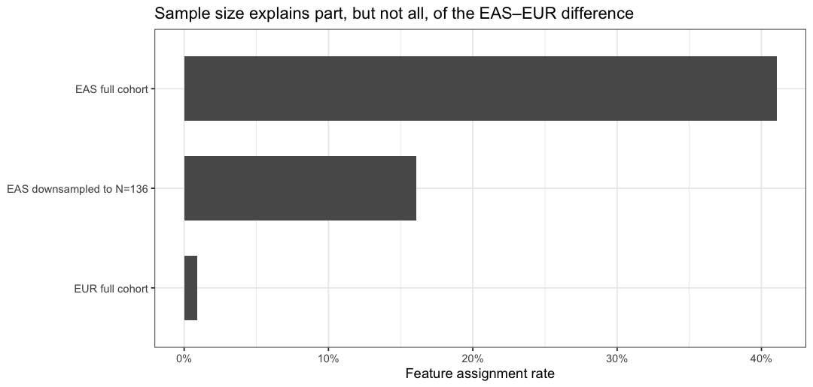
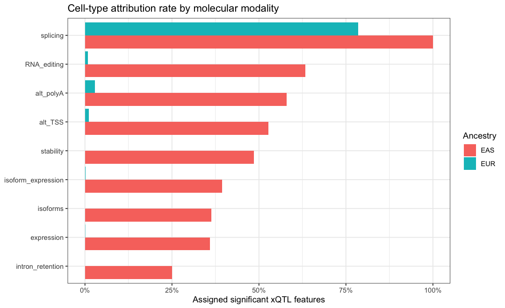
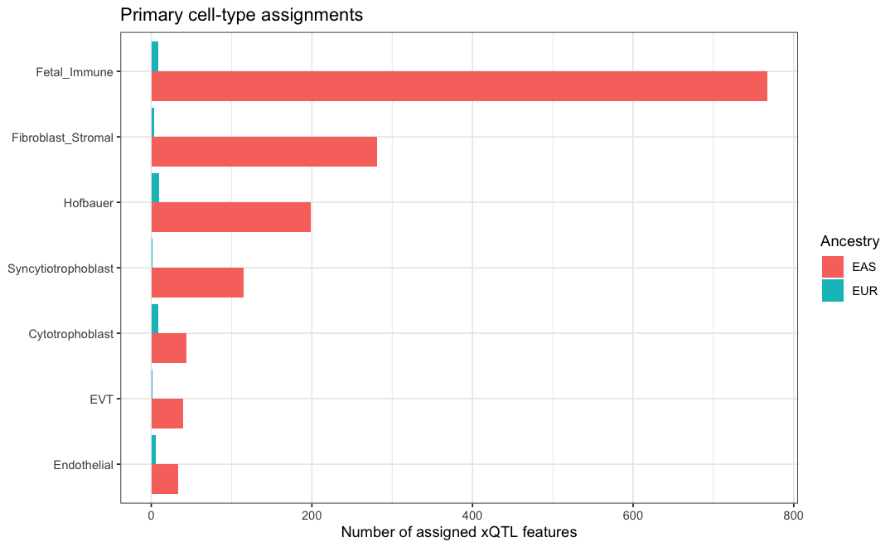
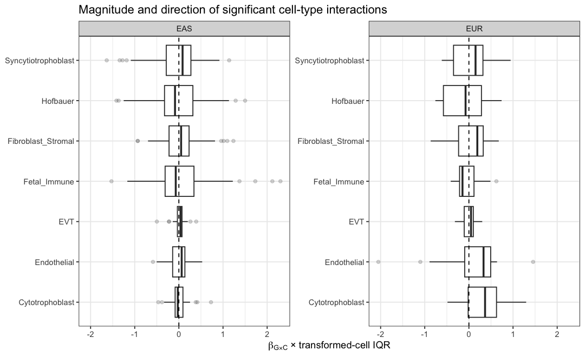
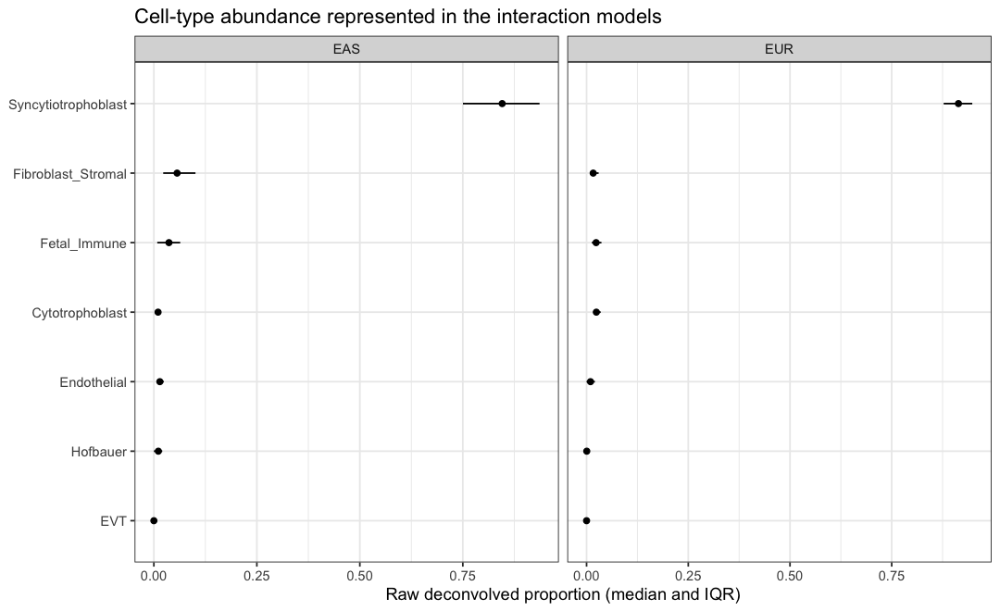
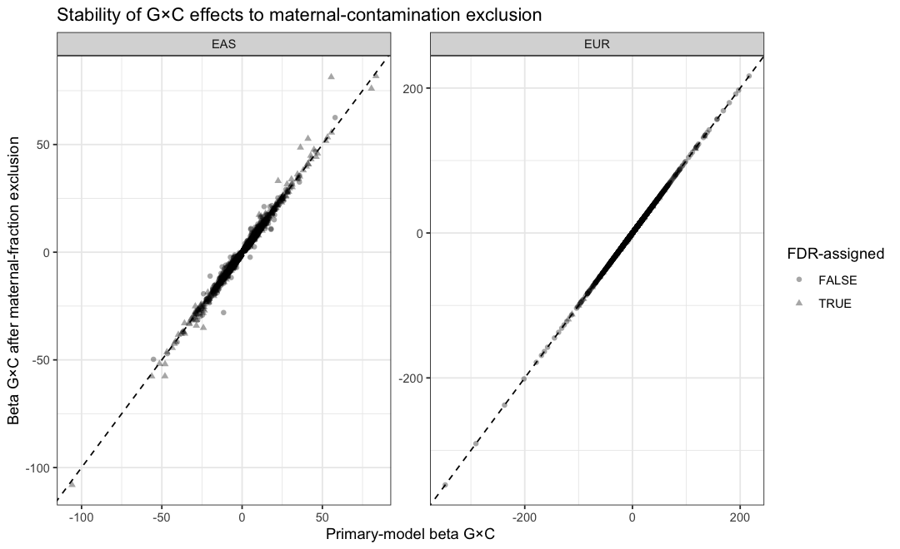
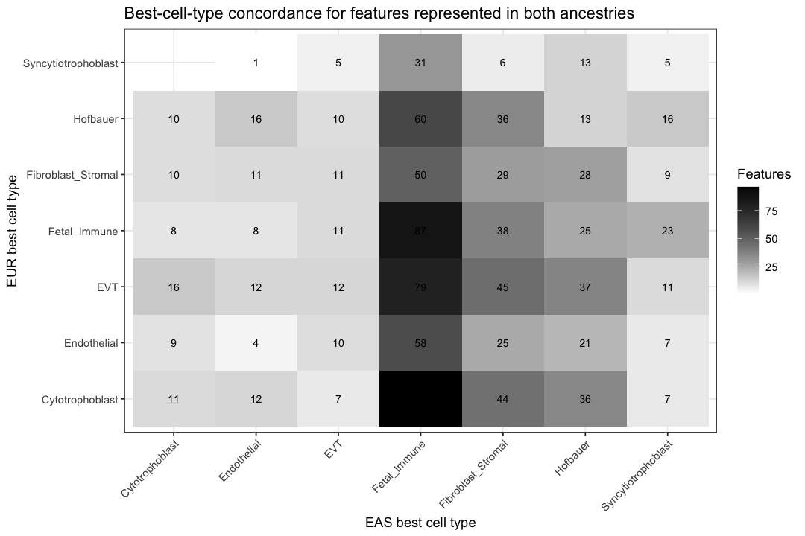

9 Cell-type attribution
9.1 Executive summary
This report summarizes the deconvolution-based cell-type attribution of significant placental xQTLs. The attribution model tests whether the effect of an ancestry-specific lead cis-xQTL varies with estimated placental cell-type abundance:
Y = β0 + βGG + βCC + βG × C(G × C) + *Z**γ + ϵ*,
where Y is the normalized molecular phenotype, G is the Module-05 lead cis-xQTL dosage, C is the transformed cell-type proportion, and Z contains the optimized xQTL covariates with the target cell-type covariate removed. The cell-type attribution statistic is βG × C. Primary cell types are assigned only when the best cell-type interaction passes the configured feature-attribution threshold (0.05).
The supplied results contain 56,812 genotype × cell-type tests spanning 8,116 significant xQTL features. Using the current aggregate evidence files, 0 unique genes are prioritized by significant TWAS, a positive SuSiE-coloc call, and/or a mixed xQTL–GWAS colocBoost CoS. Across all ancestry-feature combinations, 1,522 features (18.8%) received a significant primary-cell-type assignment. The gene-level integration below is rebuilt directly from the feature-level source table at knit time, so it remains synchronized when coloc/TWAS aggregation changes.
| ancestry | significant_xQTL_features | assigned_features | assignment_rate | modalities |
|---|---|---|---|---|
| EAS | 3606 | 1480 | 41.0% | 9 |
| EUR | 4510 | 42 | 0.9% | 9 |
Feature-level cell-type attribution summary by ancestry
Follow-up diagnostic summary. EUR’s N≈136 is the full analysis cohort, not hidden sample loss. EAS assigns 41.0% of significant xQTL features at full N, and still assigns a median 16.1% after repeated downsampling to N=136, versus 0.9% in EUR. Median residualized G×cell interaction information is 7.1× higher in EAS. Robust HC3 inference further reduces the number of supported assignments, so ancestry differences in attribution yield should not be interpreted as ancestry differences in biology.
Interpretation note. An assignment means that the lead xQTL’s estimated genetic effect changes with a deconvolved cell proportion. It is an attribution from bulk-tissue interaction modeling, not direct measurement of an xQTL within purified or single cells. Assignment rates also depend strongly on sample size, cell-proportion variability, covariate rank, and multiple-testing burden; differences between ancestries should therefore not be interpreted as differences in the biological prevalence of cell-type-specific regulation without further analysis.
9.2 Inputs and provenance
| table | path | rows | columns |
|---|---|---|---|
| All G×C interaction fits | /Users/stbresnahan/Documents/GitHub/Placenta_xQTL_atlas/reports/celltype_diagnostics_bundle/xqtl_celltype_interactions.tsv.gz | 56812 | 35 |
| Feature-level assignments | /Users/stbresnahan/Documents/GitHub/Placenta_xQTL_atlas/reports/celltype_diagnostics_bundle/xqtl_celltype_annotation.tsv.gz | 8116 | 14 |
| Archived gene-level compatibility table | /Users/stbresnahan/Documents/GitHub/Placenta_xQTL_atlas/reports/celltype_diagnostics_bundle/gene_celltype_annotation.tsv | 1301 | 19 |
| SuSiE-coloc aggregate | not found | NA | NA |
| colocBoost clusters | not found | NA | NA |
| Gene-level TWAS aggregate | not found | NA | NA |
| Stage-50 diagnostic bundle | /Users/stbresnahan/Documents/GitHub/Placenta_xQTL_atlas/reports/celltype_diagnostics_bundle/celltype_diagnostics_bundle.zip | NA | NA |
Input tables used by this report
The detailed interaction table is the statistical source of truth. The
feature-level table selects the best tested cell type per ancestry ×
modality × phenotype and gates primary_cell_type on FDR.
gene_celltype_annotation.tsv is retained as a compatibility artifact,
but the report rebuilds the prioritized-gene layer from the
SuSiE-coloc, colocBoost, and TWAS aggregates and derives each gene’s
cell-type annotation directly from xqtl_celltype_annotation.tsv.gz.
| current_prioritized_genes | archived_gene_annotation_rows | prioritized_genes_missing_from_archived_table |
|---|---|---|
| 0 | 1301 | 0 |
Coverage of the gene-level table relative to the current evidence union
9.3 Model-fit quality control
9.3.1 Fit status
| ancestry | status | n_tests | fraction |
|---|---|---|---|
| EAS | ok | 21868 | 86.6% |
| EAS | rank_deficient | 3374 | 13.4% |
| EUR | ok | 31570 | 100.0% |
G×C model status by ancestry

Rank-deficient models are retained in the detailed table for auditability but do not contribute a valid G×C p-value/FDR assignment. A high rank-deficiency fraction within a specific ancestry/modality should be investigated before interpreting cell-type assignment rates.
9.3.2 Sample size and minor-allele frequency
| ancestry | modality | n_tests | n_features | median_n | q25_n | q75_n | min_n | max_n | median_maf | median_se_GxC |
|---|---|---|---|---|---|---|---|---|---|---|
| EAS | RNA_editing | 154 | 22 | 281 | 281 | 281 | 281 | 281 | 0.307 | 3.187 |
| EAS | alt_TSS | 1148 | 164 | 281 | 281 | 281 | 281 | 281 | 0.302 | 3.661 |
| EAS | alt_polyA | 2156 | 308 | 281 | 281 | 281 | 281 | 281 | 0.317 | 2.505 |
| EAS | expression | 6909 | 987 | 281 | 281 | 281 | 281 | 281 | 0.290 | 1.265 |
| EAS | intron_retention | 343 | 49 | 281 | 281 | 281 | 281 | 281 | 0.267 | 2.699 |
| EAS | isoform_expression | 8036 | 1148 | 281 | 281 | 281 | 281 | 281 | 0.296 | 2.346 |
| EAS | isoforms | 2219 | 317 | 281 | 281 | 281 | 281 | 281 | 0.299 | 2.815 |
| EAS | splicing | 35 | 5 | 280 | 280 | 280 | 280 | 280 | 0.069 | 1.851 |
| EAS | stability | 868 | 124 | 281 | 281 | 281 | 281 | 281 | 0.293 | 2.681 |
| EUR | RNA_editing | 1722 | 246 | 136 | 136 | 136 | 136 | 136 | 0.338 | 7.592 |
| EUR | alt_TSS | 630 | 90 | 136 | 136 | 136 | 136 | 136 | 0.280 | 6.392 |
| EUR | alt_polyA | 3213 | 459 | 136 | 136 | 136 | 136 | 136 | 0.257 | 5.996 |
| EUR | expression | 10696 | 1528 | 136 | 136 | 136 | 136 | 136 | 0.260 | 2.643 |
| EUR | intron_retention | 714 | 102 | 136 | 136 | 136 | 136 | 136 | 0.268 | 7.133 |
| EUR | isoform_expression | 11221 | 1603 | 136 | 136 | 136 | 136 | 136 | 0.272 | 3.416 |
| EUR | isoforms | 1757 | 251 | 136 | 136 | 136 | 136 | 136 | 0.278 | 6.745 |
| EUR | splicing | 196 | 28 | 135 | 135 | 135 | 135 | 135 | 0.063 | 6.193 |
| EUR | stability | 1421 | 203 | 136 | 136 | 136 | 136 | 136 | 0.301 | 6.626 |
Complete-model sample size, MAF, and interaction SE by ancestry and modality

9.3.3 Follow-up diagnostics for the EAS–EUR attribution imbalance
Stage 50 was run specifically to determine whether the low EUR attribution yield reflects hidden sample loss, sample-size-dependent interaction power, lack of genotype × cell-composition support, or unstable classical OLS inference. The results below are intentionally restricted to the most informative diagnostics.
| ancestry | genotype_n | n_features | n_assigned | classical_assignment_rate | hc3_assigned | hc3_assignment_rate | median_interaction_information | median_min_minor_carriers_per_cell_tertile | median_max_leverage |
|---|---|---|---|---|---|---|---|---|---|
| EAS | 281 | 3606 | 1480 | 41.0% | 670 | 18.58% | 0.0567 | 39 | 0.9853 |
| EUR | 136 | 4510 | 42 | 0.9% | 2 | 0.04% | 0.0080 | 15 | 0.8255 |
Key ancestry-level diagnostics for cell-type attribution
There is no evidence that EUR was inadvertently reduced to 136 samples: genotype, phenotype, covariate, and deconvolution inputs all contain 136 EUR samples for essentially every modality (splicing has 135 complete samples). Thus N≈136 is the EUR cohort size itself, not pipeline attrition.
| analysis | n | assignment_rate | range |
|---|---|---|---|
| EAS full cohort | 281 | 41.0% | NA |
| EAS downsampled to N=136 | 136 | 16.1% | 12.7%–18.6% |
| EUR full cohort | 136 | 0.9% | NA |
Effect of sample size on feature-level attribution (10 EAS downsampling replicates)

At the same N=136, downsampled EAS retains a median assignment rate far above EUR. Sample size therefore accounts for substantial loss of interaction power, but does not by itself explain the EUR result. The supplied diagnostics bundle contains 10 completed downsampling replicates, so the displayed range is descriptive rather than a precise confidence interval.
| cell_type | EAS_to_EUR_ratio |
|---|---|
| Fibroblast_Stromal | 49.9 |
| EVT | 27.1 |
| Syncytiotrophoblast | 18.7 |
| Hofbauer | 18.1 |
| Fetal_Immune | 10.5 |
| Endothelial | 6.2 |
| Cytotrophoblast | 4.1 |
Median residualized G×cell interaction-information ratio by cell type
Median residualized G×cell interaction information is 7.1× higher in EAS, despite the sample-size ratio being only 2.07×. The median minimum number of minor-allele carriers represented across low/middle/high cell-fraction tertiles is 39 in EAS versus 15 in EUR. The largest information deficits occur for fibroblast/stromal, EVT, syncytiotrophoblast, and Hofbauer contexts. This indicates that EUR has substantially less usable variation in the interaction regressor, beyond its smaller N.
Finally, HC3 heteroskedasticity/leverage-robust inference is materially more conservative than the production classical OLS standard errors. Using HC3 q-values while retaining all production-significant features as the denominator, the supported assignment rate falls from 41.0% to 18.6% in EAS, and from 0.9% to 0.04% in EUR. The apparently strong EUR splicing exception also disappears under HC3. These diagnostics favor an interpretation of limited EUR interaction information plus sensitivity of classical OLS inference to leverage/heteroskedasticity, rather than evidence that cell-type-specific regulatory effects are biologically absent in EUR.
9.3.4 Lead-variant provenance
| ancestry | lead_source | n_features |
|---|---|---|
| EAS | module05_discovery | 3606 |
| EUR | module05_discovery | 4510 |
Source of lead variants tested for cell-type interaction
Ideally all tested variants come from the exact ancestry-specific Module-05 discovery lead table. Any fallback source should be reviewed because it can change the interpretation of the attribution test.
9.4 Feature-level cell-type assignments
9.4.1 Assignment rate by modality
| ancestry | modality | n_features | assignment_rate | assigned |
|---|---|---|---|---|
| EAS | RNA_editing | 30 | 63.3% | 19 |
| EAS | alt_TSS | 184 | 52.7% | 97 |
| EAS | alt_polyA | 371 | 58.0% | 215 |
| EAS | expression | 1123 | 36.0% | 404 |
| EAS | intron_retention | 56 | 25.0% | 14 |
| EAS | isoform_expression | 1333 | 39.5% | 526 |
| EAS | isoforms | 364 | 36.3% | 132 |
| EAS | splicing | 5 | 100.0% | 5 |
| EAS | stability | 140 | 48.6% | 68 |
| EUR | RNA_editing | 246 | 0.8% | 2 |
| EUR | alt_TSS | 90 | 1.1% | 1 |
| EUR | alt_polyA | 459 | 2.8% | 13 |
| EUR | expression | 1528 | 0.1% | 1 |
| EUR | intron_retention | 102 | 0.0% | 0 |
| EUR | isoform_expression | 1603 | 0.2% | 3 |
| EUR | isoforms | 251 | 0.0% | 0 |
| EUR | splicing | 28 | 78.6% | 22 |
| EUR | stability | 203 | 0.0% | 0 |
Cell-type assignment rate among significant xQTL features

9.4.2 Which cell types are assigned?
| ancestry | primary_cell_type | n_features | fraction_of_assignments |
|---|---|---|---|
| EAS | Fetal_Immune | 767 | 51.8% |
| EAS | Fibroblast_Stromal | 281 | 19.0% |
| EAS | Hofbauer | 199 | 13.4% |
| EAS | Syncytiotrophoblast | 115 | 7.8% |
| EAS | Cytotrophoblast | 44 | 3.0% |
| EAS | EVT | 40 | 2.7% |
| EAS | Endothelial | 34 | 2.3% |
| EUR | Hofbauer | 10 | 23.8% |
| EUR | Cytotrophoblast | 9 | 21.4% |
| EUR | Fetal_Immune | 9 | 21.4% |
| EUR | Endothelial | 6 | 14.3% |
| EUR | Fibroblast_Stromal | 4 | 9.5% |
| EUR | EVT | 2 | 4.8% |
| EUR | Syncytiotrophoblast | 2 | 4.8% |
Primary cell types among significantly assigned xQTL features

9.5 Strength of the G×cell interaction
The raw beta_GxC is expressed per unit of the transformed
cell-proportion variable. For cross-cell-type interpretation,
beta_GxC_iqr is often more intuitive: it is the change in genetic
effect across the observed interquartile range of that transformed cell
proportion.
| ancestry | cell_type | significant_tests | median_abs_beta_GxC | median_abs_beta_GxC_iqr |
|---|---|---|---|---|
| EAS | Cytotrophoblast | 97 | 9.9507 | 0.0899 |
| EAS | EVT | 64 | 11.8713 | 0.0559 |
| EAS | Endothelial | 83 | 8.1928 | 0.1411 |
| EAS | Fetal_Immune | 1086 | 5.7966 | 0.3225 |
| EAS | Fibroblast_Stromal | 839 | 2.9141 | 0.2275 |
| EAS | Hofbauer | 698 | 15.7955 | 0.3219 |
| EAS | Syncytiotrophoblast | 742 | 1.9436 | 0.2763 |
| EUR | Cytotrophoblast | 19 | 22.0639 | 0.3702 |
| EUR | EVT | 11 | 88.7854 | 0.1113 |
| EUR | Endothelial | 18 | 23.6326 | 0.4833 |
| EUR | Fetal_Immune | 20 | 8.6106 | 0.2056 |
| EUR | Fibroblast_Stromal | 14 | 15.1481 | 0.3240 |
| EUR | Hofbauer | 13 | 60.5092 | 0.3847 |
| EUR | Syncytiotrophoblast | 11 | 6.5808 | 0.3452 |
Effect-size summary for FDR-significant G×C tests

9.5.1 Top feature-level assignments
| ancestry | modality | phenotype_id | variant_id | primary_cell_type | primary_beta_GxC | primary_se_GxC | primary_p_GxC | primary_q_GxC | maternal_sensitivity_beta_GxC | maternal_sensitivity_p_GxC |
|---|---|---|---|---|---|---|---|---|---|---|
| EAS | isoform_expression | ENSG00000198015.14__ENST00000552938.1 | 12:93510753:A:G | Fetal_Immune | 38.0640 | 3.3087 | 0 | 0 | 38.0685 | 0 |
| EAS | isoform_expression | ENSG00000100744.15__ENST00000554182.5 | 14:96331387:G:A | Fetal_Immune | -27.4447 | 2.7968 | 0 | 0 | -26.4649 | 0 |
| EAS | isoform_expression | ENSG00000160221.18__ENST00000480786.1 | 21:44053922:TTGA:T | Fetal_Immune | 19.8304 | 2.0615 | 0 | 0 | 19.6781 | 0 |
| EAS | expression | ENSG00000293427.1 | 22:20768959:C:T | Fetal_Immune | -8.2490 | 0.8965 | 0 | 0 | -8.2333 | 0 |
| EUR | splicing | ENSG00000053371.13_chr1_19286372_19288496_clu_208- | 1:19592177:G:A | Hofbauer | -112.2825 | 10.4313 | 0 | 0 | -112.2825 | 0 |
| EAS | isoform_expression | ENSG00000118804.9__ENST00000237642.7 | 4:76281659:A:G | Fetal_Immune | -12.9996 | 1.4838 | 0 | 0 | -12.9080 | 0 |
| EAS | expression | ENSG00000099974.8 | 22:23915150:G:A | Fetal_Immune | -14.4303 | 1.6416 | 0 | 0 | -14.4431 | 0 |
| EAS | alt_polyA | ENSG00000112936.21__grp_1_downstream_ENST00000696441.1 | 5:40968956:T:A | Fetal_Immune | 10.7283 | 1.2783 | 0 | 0 | 10.6920 | 0 |
| EAS | alt_polyA | ENSG00000164587.13__grp_2_downstream_ENST00000401695.8 | 5:150449187:G:C | Fetal_Immune | -7.7577 | 0.9245 | 0 | 0 | -7.7677 | 0 |
| EAS | alt_polyA | ENSG00000112936.21__grp_2_downstream_ENST00000696441.1 | 5:40968956:T:A | Fetal_Immune | 10.6420 | 1.2694 | 0 | 0 | 10.6421 | 0 |
| EAS | alt_polyA | ENSG00000112936.21__grp_1_downstream_ENST00000696333.1 | 5:40966574:T:C | Fetal_Immune | -10.0971 | 1.2509 | 0 | 0 | -10.0638 | 0 |
| EAS | expression | ENSG00000118804.9 | 4:76281659:A:G | Fetal_Immune | -11.4336 | 1.4048 | 0 | 0 | -11.4074 | 0 |
| EAS | isoform_expression | ENSG00000293427.1__ENST00000477296.5 | 22:20768959:C:T | Fetal_Immune | -8.5078 | 1.0553 | 0 | 0 | -8.4990 | 0 |
| EAS | stability | ENSG00000167004.14 | 15:43721311:G:C | Fetal_Immune | 11.7685 | 1.5084 | 0 | 0 | 11.6566 | 0 |
| EUR | splicing | ENSG00000167522.17_chr16_89305344_89307615_clu_8136- | 16:89794094:A:G | Hofbauer | -119.1607 | 13.6876 | 0 | 0 | -119.1607 | 0 |
| EUR | splicing | ENSG00000130208.10_chr19_44916325_44931000_clu_11828+ | 19:44433568:C:T | Cytotrophoblast | 49.3375 | 5.7396 | 0 | 0 | 49.3375 | 0 |
| EUR | splicing | ENSG00000291128.1_chr19_44916325_44931000_clu_11828+ | 19:44433568:C:T | Cytotrophoblast | 49.3375 | 5.7396 | 0 | 0 | 49.3375 | 0 |
| EUR | splicing | ENSG00000134905.17_chr13_110643980_110644065_clu_5962- | 13:110206034:AAC:A | Fetal_Immune | -6.1886 | 0.7816 | 0 | 0 | -6.1886 | 0 |
| EAS | isoform_expression | ENSG00000164307.13__ENST00000296754.7 | 5:96776379:T:G | Syncytiotrophoblast | -7.6603 | 1.0320 | 0 | 0 | -7.6330 | 0 |
| EAS | isoform_expression | ENSG00000163947.12__ENST00000495373.5 | 3:56731219:A:T | Fetal_Immune | 13.0110 | 1.7772 | 0 | 0 | 12.9739 | 0 |
| EUR | splicing | ENSG00000263002.8_chr19_44141733_44142171_clu_11815+ | 19:44433568:C:T | Cytotrophoblast | 37.2656 | 4.8656 | 0 | 0 | 37.2656 | 0 |
| EAS | stability | ENSG00000110080.20 | 11:126403491:G:A | Fetal_Immune | -9.1962 | 1.3008 | 0 | 0 | -9.1620 | 0 |
| EAS | expression | ENSG00000198466.12 | 19:57865116:A:C | Fetal_Immune | 6.2985 | 0.8937 | 0 | 0 | 6.3756 | 0 |
| EAS | isoform_expression | ENSG00000198466.12__ENST00000484707.1 | 19:57862267:C:G | Fetal_Immune | 7.8193 | 1.1191 | 0 | 0 | 7.8363 | 0 |
| EAS | alt_TSS | ENSG00000164308.17__grp_2_upstream_HPLRT_039d234c78d | 5:96919113:G:A | Fetal_Immune | -10.1009 | 1.4079 | 0 | 0 | -10.0818 | 0 |
Top 25 feature-level cell-type assignments by FDR
9.6 Cell-proportion context
The detailed table stores raw cell-proportion quartiles for each tested target. Because these values repeat across many features, the table below collapses to one row per ancestry × cell type.
| ancestry | cell_type | q25 | q50 | q75 |
|---|---|---|---|---|
| EAS | Cytotrophoblast | 0.0058 | 0.0102 | 0.0149 |
| EAS | EVT | 0.0000 | 0.0000 | 0.0047 |
| EAS | Endothelial | 0.0067 | 0.0145 | 0.0239 |
| EAS | Fetal_Immune | 0.0083 | 0.0366 | 0.0640 |
| EAS | Fibroblast_Stromal | 0.0227 | 0.0564 | 0.1010 |
| EAS | Hofbauer | 0.0000 | 0.0109 | 0.0204 |
| EAS | Syncytiotrophoblast | 0.7503 | 0.8455 | 0.9362 |
| EUR | Cytotrophoblast | 0.0180 | 0.0240 | 0.0347 |
| EUR | EVT | 0.0000 | 0.0000 | 0.0013 |
| EUR | Endothelial | 0.0000 | 0.0097 | 0.0204 |
| EUR | Fetal_Immune | 0.0129 | 0.0234 | 0.0366 |
| EUR | Fibroblast_Stromal | 0.0083 | 0.0163 | 0.0296 |
| EUR | Hofbauer | 0.0000 | 0.0005 | 0.0064 |
| EUR | Syncytiotrophoblast | 0.8777 | 0.9141 | 0.9480 |
Raw deconvolved cell-proportion quartiles

9.7 Maternal-contamination sensitivity analysis
For each G×C test, the model was refit after excluding samples above the configured maternal-fraction threshold in the Module-06 analysis. The principal questions are whether the interaction effect retains its direction and whether strong primary assignments remain supported after exclusion.
| ancestry | primary_tests | same_direction_fraction | same_direction | sensitivity_p_lt_threshold_fraction | sensitivity_p_lt_threshold |
|---|---|---|---|---|---|
| EAS | 3124 | 100.0% | 3123 | 70.2% | 2193 |
| EUR | 4510 | 100.0% | 4510 | 29.5% | 1330 |
Maternal-contamination sensitivity of the best cell-type test for each feature

9.8 Cross-ancestry comparison
Because the xQTL discovery and lead variants are ancestry-specific, the same molecular phenotype can be represented by different lead variants across ancestries. Cross-ancestry comparisons below therefore describe attribution concordance, not a formal meta-analysis of a shared G×C effect.
| metric | n |
|---|---|
| Features tested in both ancestries | 1129 |
| Same ancestry-specific lead variant | 82 |
| Same best cell type | 161 |
| Assigned in both ancestries | 1 |
| Same primary cell type among all overlapping features | 0 |
Cross-ancestry feature-level attribution concordance

9.9 Genetic-evidence-prioritized gene annotations
The gene-level layer now uses the current union of three independent
downstream evidence sources: (1) positive SuSiE-coloc calls, (2)
colocBoost CoS events that contain at least one molecular xQTL outcome
and at least one GWAS outcome, and (3) gene-level TWAS results with ACAT
q < 0.05. The cell-type annotation itself is not recomputed
statistically: for each prioritized gene and ancestry, the report
selects the strongest available feature-level G×cell result from
xqtl_celltype_annotation.tsv.gz.
This distinction is important. A gene can be prioritized by one evidence source or ancestry while its strongest cell-type interaction occurs in another ancestry. An ancestry-matched cell-type assignment is presented as contextual support only when the genetic-evidence ancestry and the G×cell ancestry match. Pooled TWAS evidence is therefore not treated as ancestry-specific cell-type support.
| evidence | prioritized_genes | evidence_gene_ancestry_pairs |
|---|---|---|
| Any current evidence | 0 | 0 |
Genes represented by the current downstream evidence sources
| susie_coloc | colocboost | twas | n_genes |
|---|
Overlap of SuSiE-coloc, colocBoost, and significant TWAS gene prioritization
9.9.1 Ancestry-matched cell-type support
| evidence | ancestry | evidence_genes | genes_with_celltype_record | genes_with_primary_assignment | assignment_rate_among_records |
|---|
Ancestry-matched G×cell attribution among evidence-prioritized genes
9.9.2 colocBoost × cell-type integration
colocBoost is summarized separately because a CoS can connect several
molecular outcomes and several GWAS traits. purity, cos_npc, and
min_npc_outcome are retained as colocBoost diagnostics; they are
not treated as SuSiE-coloc PP4 values. The table below shows each
mixed xQTL–GWAS CoS at the gene level and attaches only the cell-type
result from the same ancestry.
## No mixed xQTL–GWAS colocBoost events were available in the supplied aggregate.9.9.3 Current prioritized-gene table
| ancestry | prioritized_genes | genes_with_record | assigned_genes | assignment_rate |
|---|---|---|---|---|
| EAS | 0 | 0 | 0 | NA |
| EUR | 0 | 0 | 0 | NA |
Cell-type assignments among the evidence-prioritized gene union
| gene | evidence_sources | evidence_ancestries | primary_cell_type_EAS | primary_q_GxC_EAS | modality_EAS | phenotype_id_EAS | primary_cell_type_EUR | primary_q_GxC_EUR | modality_EUR | phenotype_id_EUR |
|---|
Top 25 evidence-prioritized genes ordered by strongest available G×cell FDR
9.11 Recommended interpretation
The most defensible use of these results is to treat cell type as an attribution layer on top of an already significant xQTL, rather than as an independent genome-wide discovery analysis. In particular:
xqtl_celltype_interactions.tsv.gzshould be used for statistical details, sensitivity analyses, and plots of genetic effect as a function of cell composition.xqtl_celltype_annotation.tsv.gzis appropriate for a one-label summary of each significant xQTL feature, butunassignedshould be retained rather than forcing every xQTL to a cell type.- Gene-level cell-type interpretation should be generated from the
current union of downstream evidence rather than assuming
gene_celltype_annotation.tsvis synchronized after every aggregation rerun. The report therefore rebuilds the prioritized-gene layer from SuSiE-coloc, mixed xQTL–GWAS colocBoost events, and significant gene-level TWAS, then maps those genes back to the feature-level attribution source table. - Cell-type evidence should be ancestry matched. An EAS G×cell assignment is useful biological context for a EUR-only colocBoost or SuSiE-coloc gene, but it should not be described as ancestry-matched support for that EUR event. Likewise, pooled TWAS does not by itself specify an ancestry for the G×cell annotation.
- The source modality and phenotype should always be retained because different molecular features of the same gene can have different cell-type interactions.
- The Stage-50 diagnostics show that EUR’s low attribution yield is not caused by hidden sample loss. EAS downsampling to N=136 reduces attribution substantially but still leaves a much higher assignment rate than observed in EUR; EUR also has markedly less residualized G×cell interaction information and weaker minor-allele support across the cell-composition range. The ancestry contrast should therefore be interpreted primarily as a power/information difference, not as evidence that cell-type-specific regulation is biologically rarer in EUR.
- HC3 robust inference is substantially more conservative than classical OLS in these data, especially for the apparent splicing signals. Classical assignments remain the production output summarized elsewhere in this report, but HC3 results should be treated as an important robustness qualifier.
- Maternal-contamination sensitivity results provide an important check that an apparent fetal-cell attribution is not primarily driven by variation in maternal contribution to bulk placental tissue.
9.12 Column dictionary
9.12.1 xqtl_celltype_interactions.tsv.gz
| column | description |
|---|---|
| ancestry / modality / phenotype_id | xQTL stratum and molecular feature |
| variant_id | Ancestry-specific Module-05 lead cis-xQTL variant |
| lead_pval_nominal | Nominal cis-xQTL p-value for the selected lead variant |
| lead_source | Provenance of the selected lead variant |
| cell_type | Deconvolved fetal cell type tested as the interaction context |
| cell_prop_raw_q25/q50/q75 | Raw deconvolved cell-proportion quartiles |
| status | Model completion/QC status |
| n | Complete samples used by the model |
| af / maf | Allele frequency and minor-allele frequency in analyzed samples |
| beta_G | Genotype main-effect coefficient at mean-centered cell proportion |
| beta_C | Cell-proportion main-effect coefficient |
| beta_GxC / se_GxC / p_GxC | Genotype × cell-proportion interaction estimate, SE, and nominal p-value |
| q_GxC | BH FDR for G×C tests within ancestry × modality |
| cell_transformed_* | Quartiles/IQR of the transformed cell-proportion variable |
| beta_GxC_iqr | Change in genetic effect across one observed transformed-cell IQR |
| beta_G_at_cell_q25/q50/q75 | Estimated genetic slope at cell-proportion quartiles |
| maternal_sensitivity_* | Refit statistics after excluding samples above the maternal-fraction threshold |
Detailed interaction-table columns
9.12.2 xqtl_celltype_annotation.tsv.gz
| column | description |
|---|---|
| best_cell_type | Cell type with the strongest valid G×C evidence for the feature |
| primary_cell_type | best_cell_type if its G×C FDR passes the assignment threshold; otherwise unassigned |
| primary_beta_GxC / primary_se_GxC | Interaction estimate and SE for the best cell type |
| primary_p_GxC / primary_q_GxC | Nominal p-value and ancestry × modality BH FDR for the best cell type |
| n_celltypes_tested | Number of valid fetal-cell interaction tests for the feature |
| maternal_sensitivity_* | Sensitivity estimate and p-value for the selected best cell type |
Feature-assignment table columns
9.13 Reproducibility
This report is descriptive: it reads the completed Module-06 attribution outputs and does not refit genotype × cell-type models.
## Rendered: 2026-10-12 11:39:56
## results_dir: /Users/stbresnahan/Documents/GitHub/Placenta_xQTL_atlas/reports/celltype_diagnostics_bundle
## diagnostics_bundle: /Users/stbresnahan/Documents/GitHub/Placenta_xQTL_atlas/reports/celltype_diagnostics_bundle/celltype_diagnostics_bundle.zip
## coloc_best: not found
## colocboost_clusters: not found
## twas_gene_results: not found
## celltype_q: 0.05
## R version 4.4.1 (2024-06-14)
## Platform: aarch64-apple-darwin20
## Running under: macOS 26.7.1
##
## Matrix products: default
## BLAS: /Library/Frameworks/R.framework/Versions/4.4-arm64/Resources/lib/libRblas.0.dylib
## LAPACK: /Library/Frameworks/R.framework/Versions/4.4-arm64/Resources/lib/libRlapack.dylib; LAPACK version 3.12.0
##
## locale:
## [1] en_US.UTF-8/en_US.UTF-8/en_US.UTF-8/C/en_US.UTF-8/en_US.UTF-8
##
## time zone: America/Chicago
## tzcode source: internal
##
## attached base packages:
## [1] stats graphics grDevices utils datasets methods base
##
## other attached packages:
## [1] knitr_1.51 forcats_1.0.1 scales_1.4.0 ggprism_1.0.7
## [5] data.table_1.16.2 patchwork_1.3.2 ggplot2_4.0.2 stringr_1.6.0
## [9] tibble_3.3.1 purrr_1.2.1 readr_2.2.0 tidyr_1.3.2
## [13] dplyr_1.2.0
##
## loaded via a namespace (and not attached):
## [1] RColorBrewer_1.1-3 jsonlite_2.0.0 shape_1.4.6.1
## [4] magrittr_2.0.4 ggtangle_0.1.1 magick_2.9.1
## [7] farver_2.1.2 rmarkdown_2.30 GlobalOptions_0.1.3
## [10] fs_1.6.7 zlibbioc_1.52.0 ragg_1.5.1
## [13] vctrs_0.7.2 memoise_2.0.1 Cairo_1.7-0
## [16] RCurl_1.98-1.16 ggtree_3.14.0 htmltools_0.5.9
## [19] curl_7.0.0 gridGraphics_0.5-1 htmlwidgets_1.6.4
## [22] plyr_1.8.9 plotly_4.12.0 cachem_1.1.0
## [25] igraph_2.1.1 lifecycle_1.0.5 iterators_1.0.14
## [28] pkgconfig_2.0.3 Matrix_1.7-1 R6_2.6.1
## [31] fastmap_1.2.0 gson_0.1.0 GenomeInfoDbData_1.2.13
## [34] clue_0.3-67 digest_0.6.39 aplot_0.2.9
## [37] enrichplot_1.26.6 colorspace_2.1-2 AnnotationDbi_1.68.0
## [40] S4Vectors_0.44.0 textshaping_1.0.5 RSQLite_2.3.7
## [43] org.Hs.eg.db_3.20.0 labeling_0.4.3 httr_1.4.7
## [46] mgcv_1.9-1 compiler_4.4.1 bit64_4.5.2
## [49] withr_3.0.2 doParallel_1.0.17 S7_0.2.1
## [52] BiocParallel_1.40.2 DBI_1.2.3 R.utils_2.13.0
## [55] MASS_7.3-61 rappdirs_0.3.3 rjson_0.2.23
## [58] tools_4.4.1 otel_0.2.0 ape_5.8-1
## [61] R.oo_1.27.1 glue_1.8.0 nlme_3.1-166
## [64] GOSemSim_2.32.0 grid_4.4.1 cluster_2.1.6
## [67] reshape2_1.4.4 fgsea_1.32.4 generics_0.1.4
## [70] gtable_0.3.6 tzdb_0.5.0 R.methodsS3_1.8.2
## [73] hms_1.1.3 XVector_0.46.0 BiocGenerics_0.52.0
## [76] ggrepel_0.9.8 foreach_1.5.2 pillar_1.11.1
## [79] yulab.utils_0.2.4 vroom_1.7.0 circlize_0.4.17
## [82] splines_4.4.1 treeio_1.30.0 lattice_0.22-6
## [85] bit_4.5.0 tidyselect_1.2.1 GO.db_3.20.0
## [88] ComplexHeatmap_2.22.0 Biostrings_2.74.1 bookdown_0.46
## [91] IRanges_2.40.1 stats4_4.4.1 xfun_0.57
## [94] Biobase_2.66.0 matrixStats_1.4.1 stringi_1.8.7
## [97] UCSC.utils_1.2.0 lazyeval_0.2.2 ggfun_0.2.0
## [100] yaml_2.3.10 evaluate_1.0.5 codetools_0.2-20
## [103] qvalue_2.38.0 ggplotify_0.1.3 cli_3.6.5
## [106] systemfonts_1.3.2 dichromat_2.0-0.1 Rcpp_1.1.1
## [109] GenomeInfoDb_1.42.3 gprofiler2_0.2.4 png_0.1-8
## [112] parallel_4.4.1 blob_1.2.4 clusterProfiler_4.14.6
## [115] DOSE_4.0.1 bitops_1.0-9 viridisLite_0.4.3
## [118] tidytree_0.4.7 crayon_1.5.3 GetoptLong_1.1.0
## [121] rlang_1.1.7 cowplot_1.2.0 fastmatch_1.1-8
## [124] KEGGREST_1.45.1